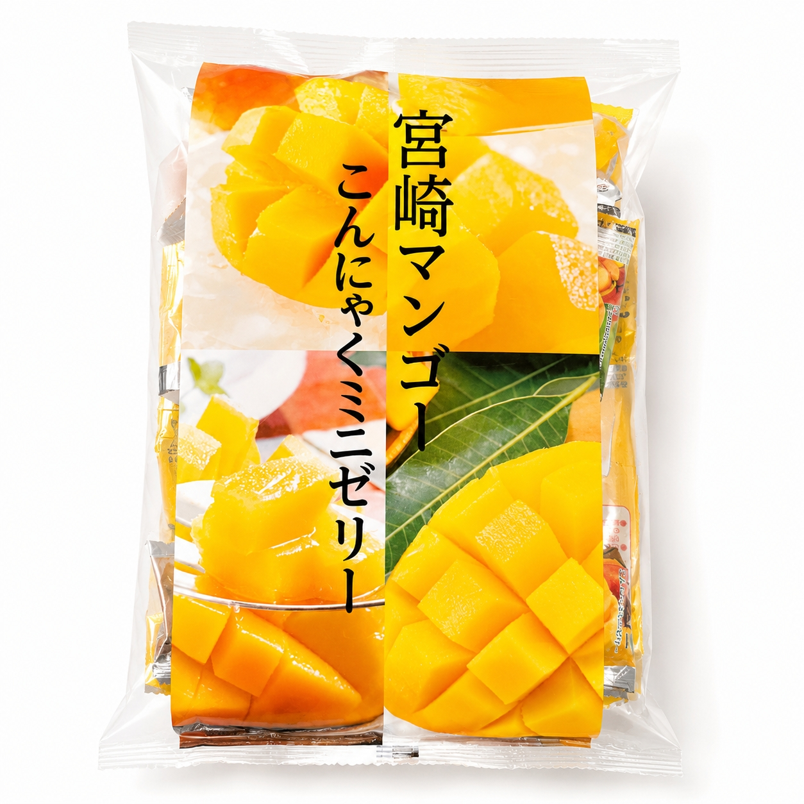
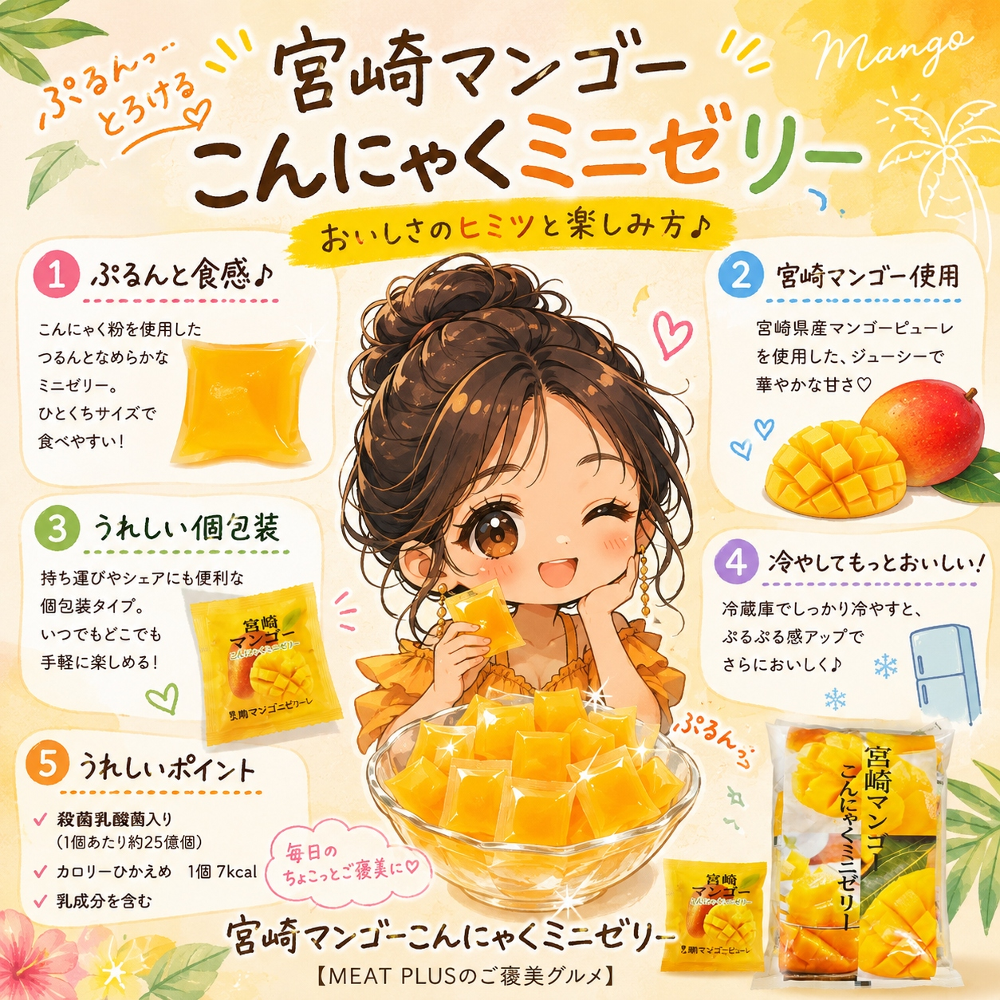
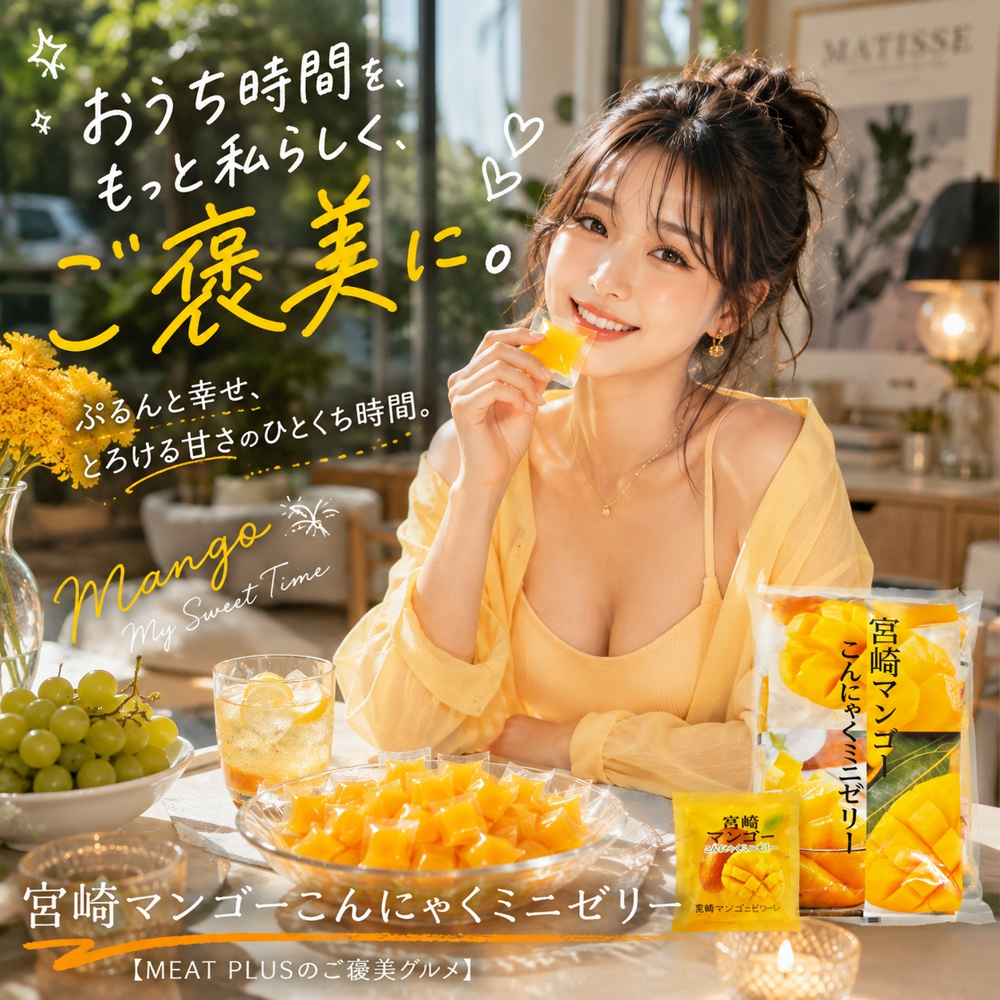

SCENE 01
K005

k スイーツ・菓子
宮崎マンゴーこんにゃくミニゼリー
【南国の香り広がる、宮崎マンゴーのぷるぷるミニゼリー。】
- 内容量500ｇ/ｐ
- 保存常温
- 産地日本
商品の特徴を読む
南国の太陽をたっぷり浴びた宮崎県産マンゴーの、甘く芳醇な香りがお口いっぱいに広がる、こんにゃくミニゼリーをお届けします。ぷるんともちっとした弾力のある食感は、こんにゃくゼリーならではの楽しさ。ついついもう一つ、と手が伸びてしまう美味しさです。たっぷり500g入った大容量パックで、ご家族みんなのおやつにぴったり。一つひとつが個包装になっているので、手を汚さず手軽に食べられ、お弁当のデザートや、お出かけのお供にも衛生的で便利です。常温で保存できるので、ストックおやつとしても大活躍。冷蔵庫で冷やしてひんやりと、また凍らせてシャーベットのように楽しむのもおすすめです。毎日の食卓に、手軽で美味しい南国の彩りを添えてみませんか。
公式サイトへ移動します。価格・在庫・配送条件は移動先で最終確認してください。

SCENE 02
【南国の香り広がる、宮崎マンゴーのぷるぷるミニゼリー。】

SCENE 03
【南国の香り広がる、宮崎マンゴーのぷるぷるミニゼリー。】
PRODUCT INFORMATION
購入前に確認したい商品情報
- 商品名
- 宮崎マンゴーこんにゃくミニゼリー
- 商品規格
- 500ｇ/ｐ
- 保存方法
- 常温
- 原産国
- 日本
- 製造地
- 日本
- 賞味期限
- 発送日より3ヶ月
原材料
果糖ぶどう糖液糖（国内製造）、マンゴーピューレ、こんにゃく粉、殺菌乳酸菌／グリシン、ゲル化剤（増粘多糖類）、酸味料、pH調整剤、甘味料（スクラロース、アセスルファムK）、香料、カロテノイド色素、（一部に乳成分を含む）
FAQ
購入前のよくあるご質問
アレルギー物質は何が含まれていますか？
原材料に乳成分を含んでおります。詳しくは商品ページの原材料表記をご確認ください。
子供や高齢者が食べても大丈夫ですか？
弾力のあるゼリーですので、喉に詰まらせないよう、小さなお子様やご高齢の方がお召し上がりになる際は、保護者の方が付き添い、スプーンで小さくするなどして少しずつお与えください。
MEAT PLUS OFFICIAL SHOP
【南国の香り広がる、宮崎マンゴーのぷるぷるミニゼリー。】
仕入れ・加工・梱包・発送まで自社で行うMEAT PLUSの公式オンラインショップでご注文いただけます。
公式オンラインショップで購入する